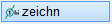
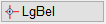
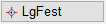
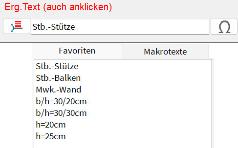
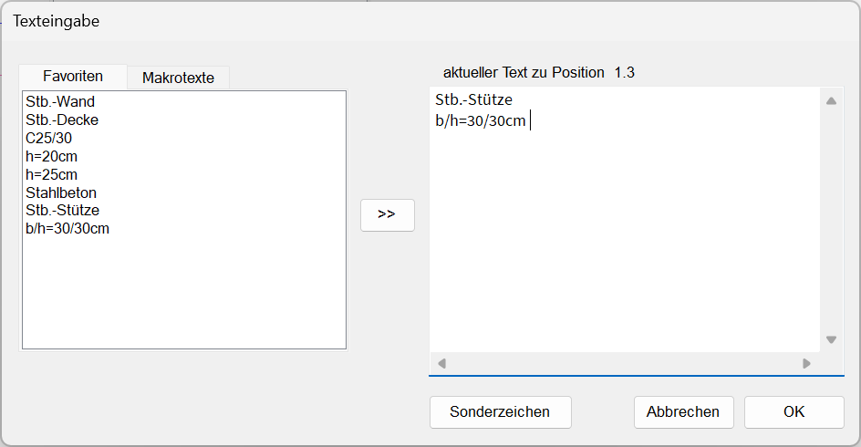
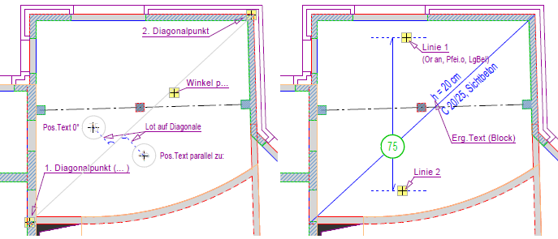

")
")
Alternativer Aufruf: mittlere Maustaste auf eine Diagonale, Zeigerlinie oder einen Positionstext.
Positionskreise für statische Positionen anlegen und dem Bauelement zuweisen.
Nach dem Erzeugen von statischen Positionen können Sie diesen zusätzliche Informationen mit den Tabellentexten zuweisen. Die Tabellentexte können als Legende für die statischen Positionen in Tabellenform zusammengefasst und in der Zeichnung abgelegt werden. Die Legende (Tabelle) kann für die Weiterverarbeitung in anderen Programmen in die Windows®-Zwischenablage kopiert werden.
Strichtyp und Liniendarstellung (Stift) können über die Optionen im Funktionsbereich gewählt oder mit der so wie-Funktion von einem anderen Element übernommen werden.
1.Positionsbereich und -bezeichnung angeben
Für punkt- oder linienartige statische Positionen (ohne Positionsbereich) können die Abfragen 1.Diagonalpunkt und 2.Diagonalpunkt durch Rechtsklick übersprungen werden. Die Zeigerlinien werden später angelegt.
§Um den Positionsbereich mittels Bereichslinie (Diagonale) zu definieren:
Klicken Sie zwei Punkte an, mit denen der Positionsbereich abgedeckt wird. [1.Diagonalpunkt, 2.Diagonalpunkt].
Liegt ein Linienpunkt im Fangbereich, wird dieser markiert. Ansonsten wird die Lage des Cursors genommen. Während Sie den 2. Diagonalpunkt auswählen, wird Ihnen am Cursor eine Vorschau der Bereichslinie angezeigt.
§Geben Sie unter Pos.Text den gewünschten Positionstext ggf. mit Sonderzeichen ein und bestätigen Sie mit der Eingabetaste.
–Die Eingabe einer Zahlen- und Buchstabenkombination ist möglich.
–Sie können einen vorhandenen Positionstext oder einen beliebig anderen Text anklicken, um diesen in die Eingabe zu übernehmen. Die Positionsnummer können Sie mit den Schaltflächen + oder - unter der Abfrage erhöhen oder verringern.
–Die Größe der Umrandung bleibt bis zu einer Eingabe von 3 Zeichen konstant.
–Leerzeichen werden entfernt.
Nummerierungsautomatik Wenn die Nummerierungsautomatik aktiviert ist, werden die Nummern, abhängig von der letzten Eingabe, automatisch erhöht. Der Positionstext wird von hinten nach vorne auf Zahlen untersucht. Die am weitesten hinten stehende Zahl wird hochgezählt. Leerzeichen werden entfernt. Z. B. folgt 3 auf 2, 5.8 auf 5.7, D17 auf D16, 2.OG10a auf 2.OG9a und 3.OG1.14c auf 3.OG1.13c. Um die Nummerierungsautomatik einzuschalten, entfernen Sie in [Option | Einste | Positionsnummern manuell hochzählen] den Haken aus der Checkbox. |
§Geben Sie unter Winkel die horizontale Ausrichtung des Positionstextes (in Grad) an und bestätigen Sie mit der Eingabetaste.

|
||||||


|
Tipps: |
|
·Wenn Sie eine Positionsnummer korrigieren möchten, geben Sie den neuen Wert mittels Tastatur ein. Die Nummerierungsautomatik wird von dem eingegebenen Wert fortgesetzt. ·Während der Eingabe können Sie im Funktionsbereich den Darstellungsstil der Positionierung ändern, indem Sie eine andere Positions ID-Nr. auswählen. Die Vorschau wird bei jedem Wechsel angepasst. |

2.Symbol platzieren und Spannrichtungs- oder Zeigerlinien erzeugen
Enthält der Positionskreis eine Bereichslinie, kann das Symbol nur auf dieser platziert werden. Ist keine Bereichslinie vorhanden, können Sie das Symbol frei platzieren.
§Symbol platzieren. [Lage]:
Klicken Sie die Stelle an, an der das Symbol platziert werden soll. Der Positionskreis wird in der Zeichnung angelegt.
§Spannrichtungs- oder Zeigerlinien erzeugen. [Linie]:
Während des Zeichnens wird Ihnen am Positionskreis eine Vorschau mit der aktuellen Darstellungskonfiguration angezeigt. Verwenden Sie die Optionen im Funktionsbereich, um Ausrichtung und Darstellung einzelner Linien vorab einzustellen.
Ausrichtungs- und Darstellungsoptionen
|
Ausrichtung der Spannrichtungs- und Zeigerlinien: Or an: orthogonal zu gedrehten Achsen. Or aus: unabhängig vom Winkel. Or Win: orthogonal zur Ausrichtung des Positionstextes. |
|
Darstellung der Spannrichtungs- und Zeigerlinien: o.Pfei: ohne Pfeilspitze. Pfei.o: Pfeilspitze einseitig oben Pfei.u: Pfeilspitze einseitig unten. Pfei.b: mit Pfeilspitzen nach oben und unten. |
  |
LgBel: beliebig lang. LgFest: mit konstanter Länge. Maßgebend ist die Länge der ersten Linie. |


§Klicken Sie in der Zeichnung einen beliebigen Endpunkt (Spannrichtung/Bereich) oder Zuordnungspunkt (Zeigerlinie) an.
Der Wert unter Linie wird auf 2 gesetzt, Sie können sofort den Endpunkt der nächsten Spannrichtungs- oder Zeigerlinie anklicken [Linie 2], oder durch Rechtsklick zur Eingabe eines Ergänzungstextes wechseln [Erg.Text].
§Weisen Sie weitere Spannrichtungs- oder Zeigerlinien hinzu. Verwenden Sie ggf. vorab die Ausrichtungs- und Darstellungsoptionen.
§Beenden Sie die Linienangabe durch Rechtsklick.
Sie können jetzt einen Ergänzungstext eingeben [Erg.Text] oder den Positionskreis durch Rechtsklick abschließend anlegen.
3.Ergänzungstext eingeben
Der Ergänzungstext kann als einzelne Textzeile (Voreinstellung) oder als mehrzeiliger Text eingegeben werden. Eine Kombination von freien Texten, Favoriten- und Makrotexten sowie zuletzt eingetragenen Texten ist in beiden Eingaben möglich.
Soll kein Ergänzungstext geschrieben werden, drücken Sie die rechte Maustaste, wenn die Eingabe leer ist.

a)Einzelne Textzeile:
§Geben Sie den Ergänzungstext ggf. mit Sonderzeichen  ein.
ein.
§Bestätigen Sie mit der Eingabetaste. [Erg.Text (auch anklicken)].
b)Mehrzeiliger Text:
§Klicken Sie auf  , um einen mehrzeiligen Text zu erzeugen. Öffnet den Dialog Texteingabe.
, um einen mehrzeiligen Text zu erzeugen. Öffnet den Dialog Texteingabe.

§Geben Sie unter aktueller Text zu Position... den gewünschten Text ein. Mit der Eingabetaste fügen Sie einen Zeilenumbruch ein.
§Um einen vorhandenen Text aus der linken Spalte an die Cursorposition zu setzen, doppelklicken Sie den Text an. Sie können den Text auch markieren und auf  klicken.
klicken.
§Geben Sie den Ergänzungstext ggf. mit Sonderzeichen ein.
§Bestätigen Sie mit OK.
c)Textübernahme:
§Nur bei einzelner Textzeile: Klicken Sie einen Text in der Zeichnung an, um diesen in die Eingabe zu übernehmen. Nach dem Anklicken des Textes gelangen Sie direkt zur Ausrichtung des Textes (Winkeleingabe). Mehrzeilige Texte können nicht übernommen werden.
d)Favoritentexte:
§Klicken Sie einen bereits eingetragenen Text oder Favoritentext in der Auswahlliste an.
Die Favoritentexte werden an oberster Position angeboten. Danach folgen die zuletzt eingetragenen Texte.
e)Makrotexte
§Klicken Sie auf die Überschrift Makrotexte, um sich die Liste anzeigen zu lassen. Wenn Sie den Mauscursor über einen Makrotext in der Liste bewegen, wird Ihnen der Textinhalt als Tooltip angezeigt.
§Klicken Sie einen Makrotext an. Die Variable wird in die Eingabe übernommen.
§Geben Sie unter Winkel die horizontale Ausrichtung des Ergänzungstextes an.
§Platzieren Sie den Ergänzungstext per Mausklick an der gewünschten Stelle. [Lage].
Die Bearbeitung des Positionskreises ist abgeschlossen. Sie können sofort einen weiteren Positionskreis anlegen. [1.Diagonalpunkt (Wenn nicht, ENTER drücken)].
Beispiel: Erzeugen eines statischen Positionskreises mit einer Diagonalen
 |
Siehe auch:
Zugehörige Referenzen: